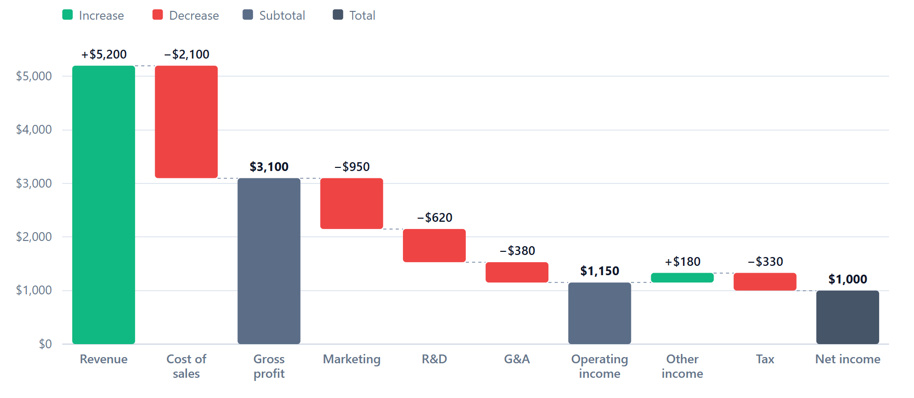

MintWaterfall
MintWaterfall


A TypeScript waterfall chart library built on D3.js v7 — subtotals, stacked segments, themes, tooltips, keyboard navigation, brushing, zooming and export, plus standalone data-processing and statistics helpers.

Installation
npm install mintwaterfall d3
# TypeScript users: npm install -D @types/d3
Script tag (UMD, exposes window.MintWaterfall):
<script src="https://cdn.jsdelivr.net/npm/d3@7/dist/d3.min.js"></script>
<script src="https://cdn.jsdelivr.net/npm/mintwaterfall/dist/mintwaterfall.min.js"></script>
Quick start
import * as d3 from "d3";
import { waterfallChart } from "mintwaterfall";
const data = [
{ label: "Revenue", stacks: [{ value: 5200 }] },
{ label: "Cost of sales", stacks: [{ value: -2100 }] },
{ label: "Gross profit", subtotal: true }, // running total so far
{ label: "Operating costs", stacks: [{ value: -1950 }] },
];
const chart = waterfallChart()
.width(880)
.height(380)
.showTotal(true)
.totalLabel("Net income")
.formatNumber(d3.format("$,.0f"))
.enableTooltips(true)
.responsive(true)
.on("barClick", (event, d) => console.log(d.label, d.barTotal));
d3.select("#chart").datum(data).call(chart);
Call selection.call(chart) again after changing data or settings — the chart updates in place with transitions.
Data format
interface ChartData {
label: string; // must be unique within the chart
stacks?: StackData[]; // segments of this step (summed for the bar's change)
subtotal?: boolean; // draw the running total from zero; does not change it
start?: boolean; // opening balance: drawn like a total; resets the running total to its value
}
interface StackData {
value: number;
color?: string; // optional — defaults to increase/decrease (or palette when stacked)
label?: string; // shown inside stacked segments and in tooltips
}
Bars receive computed fields that are passed to event handlers: barTotal (the change), cumulativeTotal (running total after the bar), prevCumulativeTotal, isTotal, isSubtotal, isStart.
Chart API
All settings are getter/setters: call with no argument to read, with a value to set (returns the chart for chaining).
| Setting | Default | Description |
|---|---|---|
width, height |
800, 400 |
Size in px (also used as the viewBox). |
margin |
{ top: 32, right: 24, bottom: 48, left: 56 } |
Minimum margins; the left/bottom grow to fit tick and axis labels. |
responsive |
false |
Scale the SVG to its container width. |
showTotal / totalLabel / totalColor |
false / "Total" / #475569 |
Append a grand-total bar. |
stacked |
false |
Draw each stack as its own segment. |
orientation |
"vertical" |
"horizontal" puts categories down the left and values along the bottom (long labels are truncated, full text on hover). Brush, zoom, time scales, confidence bands and milestones are vertical-only and are ignored with a warning. |
barPadding |
0.24 |
Gap between bars (0–0.95). |
barRadius |
3 |
Corner radius in px. |
valueLabel |
null |
(d, defaultText) => string to customise value labels; return "" to hide one. |
showLegend |
false |
Legend above the plot: segment labels when stacked, otherwise the bar kinds shown. |
showValueLabels |
true |
Signed labels (+1,200, −450) above bars; totals unsigned. |
showConnectors |
true |
Dashed lines linking consecutive bars. |
showGrid |
true |
Horizontal grid lines (zero line is emphasised when the axis crosses zero). |
formatNumber |
d3.format(",.0f") |
Formatter for axis, labels, tooltips. |
duration / ease / staggeredAnimations / staggerDelay |
650 / easeCubicOut / false / 100 |
Animation. Disabled automatically for prefers-reduced-motion. |
theme |
null |
auto (follows the reader's light/dark setting and updates live), default, dark, corporate, accessible, colorful, financial, professional, heatmap. Restyles background, grid, axes, text and bar colors. null resets. |
enableAdvancedColors / colorMode / colorTheme |
false / "conditional" / "default" |
Color bars by conditional (sign), sequential (palette per bar) or diverging scale. |
enableTooltips / tooltipConfig |
false / {} |
Hover tooltip with change, running total and stack breakdown. tooltipConfig({ theme: "light" }) etc. |
tooltipContent |
null |
(d, defaultHtml) => html to extend or replace tooltip content. Output is inserted as HTML: escape user text with the exported escapeHtml. |
enableAccessibility |
true |
ARIA roles/labels, focusable bars, keyboard navigation, chart summary. |
enableBrush |
false |
Horizontal brush; emits brushSelection. |
enableZoom / zoomConfig |
false / {} |
Horizontal zoom & pan ({ scaleExtent: [1, 8] }). |
enableExport / exportConfig |
true / {} |
Allow chart.export(); exportConfig({ filename }). |
showTrendLine, trendLineType, trendLineColor, trendLineWidth, trendLineStyle, trendLineOpacity, trendLineWindow, trendLineDegree |
off | Trend of the running total: linear, polynomial (least squares), moving-average. |
confidenceBands / enableConfidenceBands |
off | Shaded band between optimistic and pessimistic running totals: confidenceBands({ enabled: true, scenarios: { optimistic, pessimistic }, opacity, showTrendLines }). Scenario entries are { label, value } changes matched to bars by label; subtotal, total and opening bars behave as in the chart. Partial objects are merged. Vertical only. |
milestones / enableMilestones / addMilestone |
off | Markers at a value above a bar: addMilestone({ label, value, type: "target" | "threshold" | "alert" | "achievement", description }). Vertical only. |
scaleType |
"auto" |
"time" positions bars on a time scale (labels must parse as dates); otherwise categorical. |
data |
null |
Data to use when the selection has no bound datum. |
Methods:
chart.on(type, handler)— events below; supports d3-dispatch namespaces ("barClick.analytics").chart.export(format, options?)—"svg" | "png" | "json" | "csv"; resolves to{ blob, url, data, download() }.chart.destroy()— remove the tooltip element and detach zoom/brush listeners.
Events
| Event | Arguments |
|---|---|
barClick |
(event, datum) — mouse click, or Enter/Space on a focused bar |
barMouseover, barMouseout |
(event, datum) |
barFocus |
(event, datum) |
brushSelection |
(event, selectedData[]) — empty array when cleared |
chartUpdate |
(processedData[]) — after every render |
Accessibility
With enableAccessibility(true) (default) the SVG gets role="group", aria-roledescription="waterfall chart" and a generated summary (bar count, final total, largest increase/decrease) as its accessible name and <title>. Bars are a role="list" of focusable listitems with labels such as "Cost of sales: decrease of 2,100, running total 3,100". Arrow keys / Home / End move between bars; Enter or Space fires barClick. The accessible theme uses the Okabe–Ito color-blind-safe palette.
Standalone modules
These are exported for use alongside (or without) the chart:
| Export | Purpose |
|---|---|
createDataProcessor, createAdvancedDataProcessor, createRevenueWaterfall, createTemporalWaterfall, createVarianceWaterfall, transformTransactionData, … |
Shape raw records into chart data (grouping, rollups, temporal aggregation). |
createStatisticalSystem, analyzeWaterfallStatistics |
Summaries, outliers, trend analysis, data quality. |
themes, applyTheme, getConditionalColor, createSequentialScale, createDivergingScale, … |
Theme definitions and color helpers. |
createTooltipSystem, createExportSystem, createAccessibilitySystem, createShapeGenerators, createScaleSystem, createAnimationSystem |
Lower-level building blocks used by or alongside the chart. |
TypeScript types for chart data and the chart API are exported too: ChartData, StackData, ProcessedData, WaterfallChart, ChartEventType, ChartExportFormat.
import { createStatisticalSystem } from "mintwaterfall";
const stats = createStatisticalSystem();
const summary = stats.calculateSummary([4200, 3800, 5100, 4700]);
const trend = stats.analyzeTrend([
{ x: 1, y: 10 },
{ x: 2, y: 20 },
]);
Experimental (mintwaterfall/experimental)
Helpers that aren't used by the chart and have limited test coverage live in a separate entry point. They are not covered by semver: breaking changes may land in minor releases.
import { createHierarchicalLayout, createAdvancedInteractionSystem } from "mintwaterfall/experimental";
| Export | Purpose |
|---|---|
createHierarchicalLayout, createHierarchicalLayoutSystem, createWaterfallTreemap, createWaterfallSunburst, createWaterfallBubbles |
Treemap, sunburst, pack and other hierarchical layouts. |
createAdvancedInteractionSystem, createWaterfallDragBehavior, createWaterfallVoronoiConfig, createWaterfallForceConfig |
Drag, Voronoi hover and force simulation. |
createPerformanceManager, createAdvancedPerformanceSystem, createWaterfallSpatialIndex, createVirtualWaterfallRenderer |
Spatial indexing and virtualised rendering. |
createBrushSystem, createZoomSystem |
Standalone brush/zoom building blocks. For a chart, use enableBrush / enableZoom instead. |
Script tag: dist/mintwaterfall-experimental.min.js (global MintWaterfallExperimental). Upgrading from 1.x? See the 2.0.0 migration notes.
Development
git clone https://github.com/coredds/MintWaterfall.git
cd MintWaterfall
npm install
npm test # Jest: "unit" (mocked D3) + "dom" (real D3 in jsdom) projects, with coverage
npm run lint # ESLint (TypeScript + JS)
npm run typecheck # tsc --noEmit
npm run build # Rollup bundles + type declarations
npm run demo # build, then serve the demo at http://localhost:8080/mintwaterfall-example.html
npm run test:e2e # Playwright browser tests + screenshot comparisons (needs a build)
npm run test:e2e:update # accept intended visual changes (regenerate screenshots)
npm run check:size # gzip size budgets for the bundles
npm run check:package # pack, install in a clean project, type-check and load via ESM/CJS
npm run docs:api # TypeDoc API reference into api-docs/
node scripts/readme-image.mjs # regenerate the README image (.github/assets/chart.png) after visual changes
Build output:
dist/mintwaterfall.esm.js— ES moduledist/mintwaterfall.cjs— CommonJSdist/mintwaterfall.umd.js,dist/mintwaterfall.min.js— UMD for script tagsdist/experimental.esm.js,dist/experimental.cjs,dist/mintwaterfall-experimental.min.js—mintwaterfall/experimentaldist/types/— TypeScript declarations
D3 is a peer dependency and is not bundled.
See CHANGELOG.md for release notes and CONTRIBUTING.md for guidelines.
License
MIT — see LICENSE.